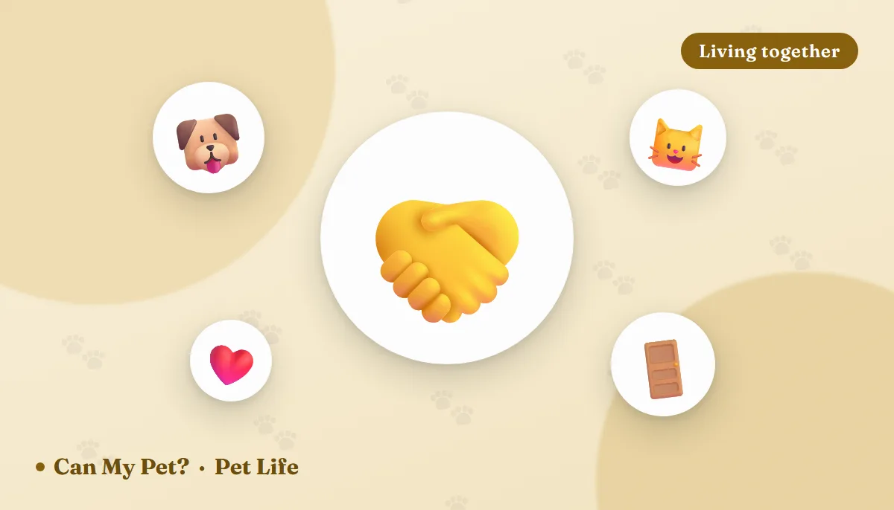

How to Introduce a New Pet: A Calm, Step-by-Step Guide

Almost every "my pets hate each other" story starts the same way: the carrier came through the front door and someone opened it. But a first meeting that goes badly doesn't just reset to neutral — it leaves both animals with a memory, and undoing that memory takes far longer than a slow introduction would have taken in the first place. The good news is that the method shelters and veterinary behaviorists use isn't complicated. It's mostly patience, a closed door, and a lot of very good snacks.
Before the new pet arrives
A little setup prevents most of the early problems.
- Build a base camp. One closable room with food, water, a bed, toys and — for cats — a litter box well away from the food. This is the new pet's whole world for the first few days.
- Vet visit first. A new animal should be checked and up to date on vaccines and parasite treatment before sharing air and surfaces with your resident pet.
- Duplicate the resources. Separate bowls and beds, and for cats: one litter box per cat plus one spare, in different rooms. Most cat "fights" are really arguments over something scarce.
- Add vertical escape routes. Cat trees, shelves, a clear path to the top of the wardrobe. A cat that can get up and away doesn't need to swat.
- Pick up the flashpoints. Favorite chews, bones and toys go away for the first couple of weeks.
Step 1: Scent before sight
To both cats and dogs, smell carries more information than appearance. Shelters lean on this hard. Rub a soft cloth gently around one animal's cheeks and place it near the other's food bowl. Swap bedding and towels between the rooms. Trade food dishes. Each day, move the scented item a little closer to where the other pet eats, so the unfamiliar smell keeps arriving alongside something wonderful.
Once both are eating calmly next to the other's scent, let them swap territory entirely — put the resident pet in the base camp for an hour or two and let the newcomer explore the rest of the house. They still haven't met, but each is now living in the other's smell. Shelter guidance commonly suggests around a week of scent work before moving on, though many pairs are ready sooner.
Step 2: Cat to cat
Cats are territorial in a way dogs aren't, and this is the pairing most often rushed.
🍽️ Feed on opposite sides of the door
Two bowls, both sides of the closed base camp door, starting far enough back that both cats keep eating. Move the bowls a few inches closer each session. If either stops eating or stares, you moved too fast — back up.
🚪 Then let them see each other
Crack the door a couple of inches and wedge it, or use a tall baby gate or screen. Keep the first look under a minute, end while it's still boring, and finish with treats on both sides.
🪶 Play across the barrier
Wand toys on either side turn "that other cat" into "the thing that appears when good stuff happens." Play also drains the tension that fuels swatting.
🐾 Open the door, supervised
Short sessions only, with escape routes open and a towel nearby in case you need to interrupt. Hissing and a warning swat are normal negotiation. Sustained yowling, chasing or pinning is not — separate and go back a step.
Full acceptance often takes two to four weeks, sometimes several months for a nervous or older resident cat. It's fine if they never cuddle. Peaceful indifference is a completely successful outcome. If you're reading a lot of unfamiliar signals, our cat body language guide will tell you what the tail is actually saying.
Step 3: Dog to dog
Dogs usually move faster, but the first meeting matters just as much. The American Kennel Club recommends introducing dogs on neutral territory — an unfamiliar park or a friend's yard rather than your living room — because there's nothing there to defend.
- Walk them first. A dog that has already burned some energy greets far more sensibly than one bursting out of the front door.
- Parallel walk. Two handlers, one dog each, walking the same direction roughly 15–20 feet apart. No greeting yet. Reward calm glances at the other dog.
- Close the gap gradually. Over several minutes, narrow the distance as long as both stay loose and interested rather than fixed and stiff.
- Brief leashed greeting. Let them sniff for three to five seconds, then cheerfully walk on. Short and repeated beats long and tense.
- Go home together. Walk the last stretch home side by side, then enter with bowls, beds and toys already put away.
Good signs: loose wagging, curved bodies, play bows, sniffing then disengaging. Stop signs: stiff posture, hard staring, raised hackles, frozen stillness, a tucked tail or lip-lifting. Our dog body language guide breaks these down in detail.
Step 4: Dog to cat
This pairing needs the most management, because the risk isn't symmetrical — an excited dog can injure a cat without meaning any harm.
Separate fully at first, do the scent swapping, then work through a baby gate with the dog on a leash. Reward the dog for looking at the cat and then looking back at you — that one behavior does most of the work. The cat needs a route out and a high perch at all times. Never let the dog chase, not even once in play; a rehearsed chase becomes a habit. Drop the leash only after several calm sessions in a row, and keep them separated when you're not home until that's boringly reliable. Our guide on whether dogs and cats get along covers which personalities tend to click.
Five mistakes that cause most failed introductions
- Letting them "work it out." Behaviorists are unanimous on this one: a scary first meeting creates a lasting association.
- Skipping the base camp. A new animal loose in the whole house has no safe place to retreat to, and neither does the resident.
- Ending sessions on a bad note. Always stop while things are still calm, not after it goes wrong.
- Ignoring the resident pet. Keep their routine, their spot on the sofa and their one-on-one time exactly as it was.
- Punishing growls and hisses. Those are warnings, and warnings are useful. Suppress them and you lose the early alarm system.
Frequently asked questions
How long does it take to introduce a new pet?
Roughly two to four weeks for cats and one to two weeks for dogs, but some pairs take months. The more anxious animal sets the pace, not the calendar.
Should I let them fight it out?
No. Shelters and veterinary behaviorists advise against it. One frightening meeting can create an association that takes far longer to undo than a slow introduction would have taken.
Does scent swapping actually work?
Yes, and it's the step people skip. Trading bedding, towels and food bowls lets each animal get used to the other's smell while something good is happening, which is exactly the association you want before they meet.
Why do dogs need to meet on neutral ground?
Because there's nothing to guard. Away from home there are no beds, bowls or doorways to defend, so the resident dog has much less reason to feel defensive.
What if they never become friends?
That's a normal outcome, especially with cats. Calm coexistence — sharing space without tension — is a successful introduction. Not every pair becomes a cuddle pile.
Sources: American Kennel Club guidance on dog-to-dog introductions and neutral territory, ASPCA and American Humane recommendations on cat-to-cat introductions and scent swapping, American Association of Feline Practitioners step-by-step introduction guidance, and shelter behavior protocols from the Animal Humane Society and Oregon Humane Society. For information only — not veterinary or behavioral advice. If an introduction involves injury, sustained aggression, or a pet that stops eating or hides, contact your vet or a certified behavior professional.